Réponses et solutions du TP3
1 Réponses et solutions du TP3
1.1 Réponses aux questions des parties 1.2 et 1.3
Pour créer le fichier FASTA des séquences HBB, il suffit de copier-coller les 5 séquences \(\beta\) dans un unique fichier texte. Afin que Clustal identifie correctement les séquences, le format FASTA doit être respecté pour chaque séquence : > Identifiant de la séquence
Séquence
Le fichier doit être sauvegardé au format .txt avec l’extension de votre choix (.txt, .fa, .faa, .fas, .fasta)
La liste des séquences au format FASTA est accessible dans le menu Docs Annexes sous le nom A5: Une famille de protéines
Vous pouvez copiez-coller la partie \(\beta\) de cette liste dans votre fichier texte pour la sauvegarder ou la coller directement dans la fenêtre de Clustal Omega
Vérifier que c’est bien l’option Protein qui est sélectionnée
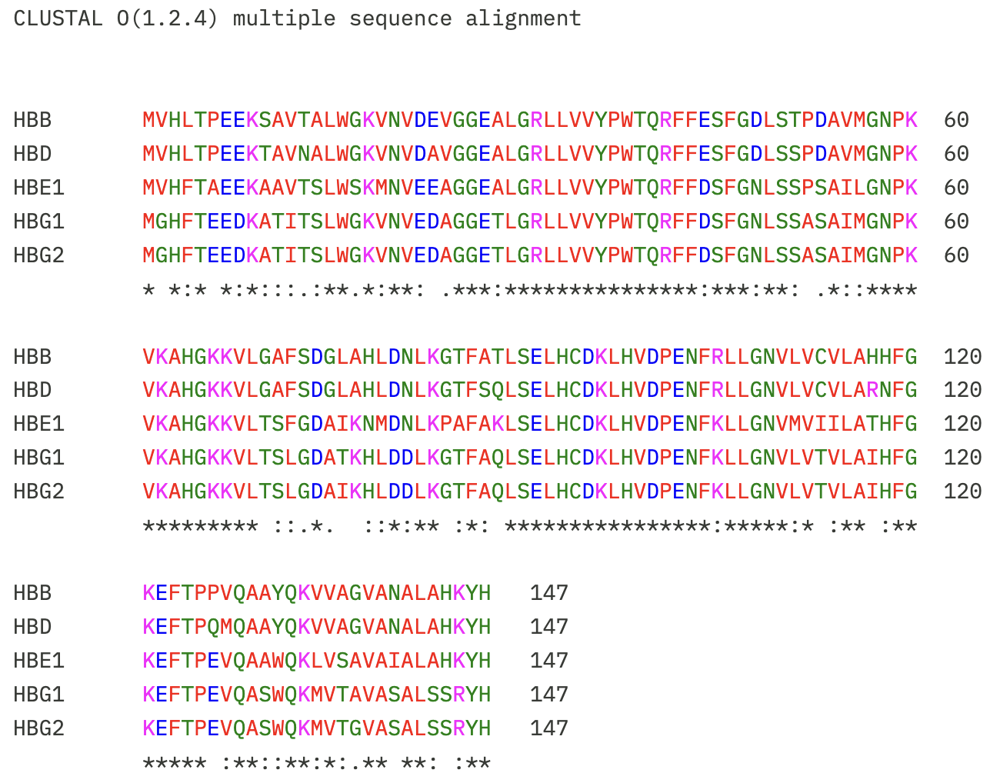
Le résultat affiche l’alignement optimal des 5 séquences soumises. Les séquences sont présentées par blocs de 60 positions avec sous les 10 alignements la séquence consensus de la totalité des colonnes.
* pour l’identité dans la colonne
: pour le mismatch conservatif
. pour le mismatch non conservatif
Répétez l’opération pour les 10 séquences des hémoglobines
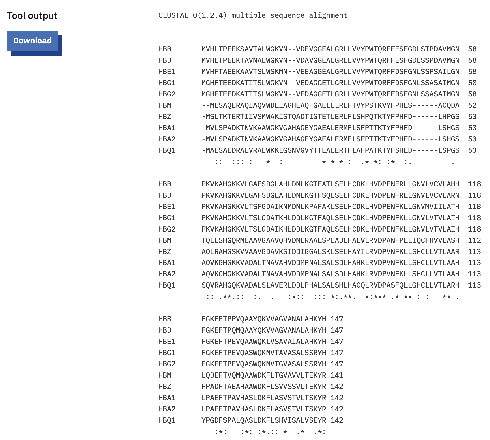
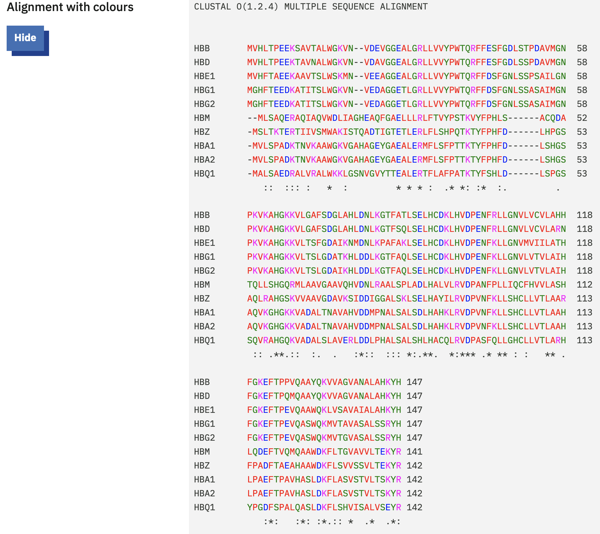
La mise en couleur des acides aminés permet de mettre en évidence les familles (ici 4 couleurs permettent d’identifier 4 familles spécifiques) et ainsi de mieux visualisés les blocs d’identité ou de similarité
- A F I L M P V W
- C G H N Q S T Y
- D E
- K R
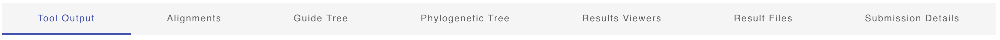
- Dans l’onglet Result files, on retrouve les informations sur les séquences fournies, la méthode d’alignement, la configuration du programme et les résultats
- La matrice Percent Identity Matrix donne le pourcentage d’identité de chaque protéine avec les autres. Il se rapporte à la colonne % d’identité des comparaisons par paire vue au TP2
- Pour classer les 10 protéines, on utilise l’arbre philogénétique (Phylogenetic Tree) produit lors du calcul.
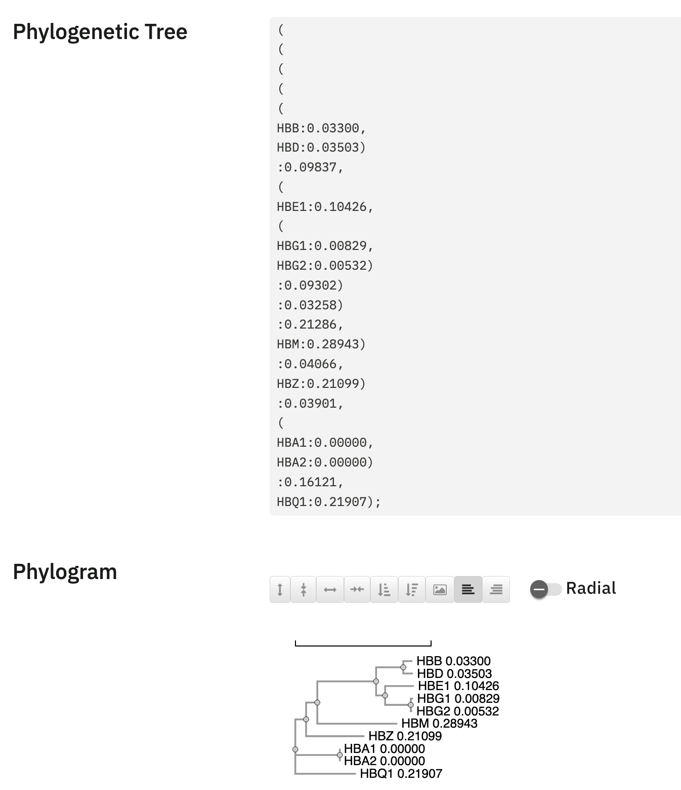
1.2 Réponses aux questions de la partie 1.4
Les séquences sont obtenues à partir de la fiche NG_000007 et des données ARNm ou CDS. Il suffit de copier-coller les 15 premiers nucléotides et les 15 derniers nucléotides de chaque intron. On obtient les listings suivant :
- Pour le début des introns:
>HBE1_i1 gtaagcattggttct >HBE1_i2 gtgagttcaggtgct >HBG2_i1 gtaggctctggtgac >HBG2_i2 gtgagtccaggagat >HBG1_i1 gtaggctctggtgac >HBG1_i2 gtgagtccaggagat >HBD_i1 gttggtatcaaggtt >HBD_i2 gtgagtccaggagat >HBB_i1 gttggtatcaaggtt >HBB_i2 gtgagtctatgggac
- Pour la fin des introns:
>HBE1_n1 ggtgtcatttcatag >HBE1_n2 tcttttgcctaacag >HBG2_n1 ttgtcaatctcacag >HBG2_n2 ctttcatctcaacag >HBG1_n1 ttgtcaatctcacag >HBG1_n2 ctttcatctcaacag >HBD_n1 ttttcctaccctcag >HBD_n2 acctcttctccgcag >HBB_n1 ttttcccacccttag >HBB_n2 atcttcctcccacag
- Développement de l’agorithme
Dans le cas de HBB, il suffit d’aligner les séquences l’une sous l’autre pour repérer les positions fixes
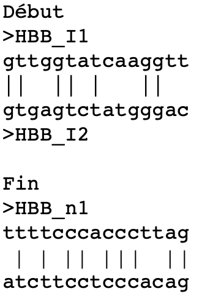
Le développement de l’algorithme consiste donc à définir la procédure pour établir les étapes nécessaires à la comparaison des séquences
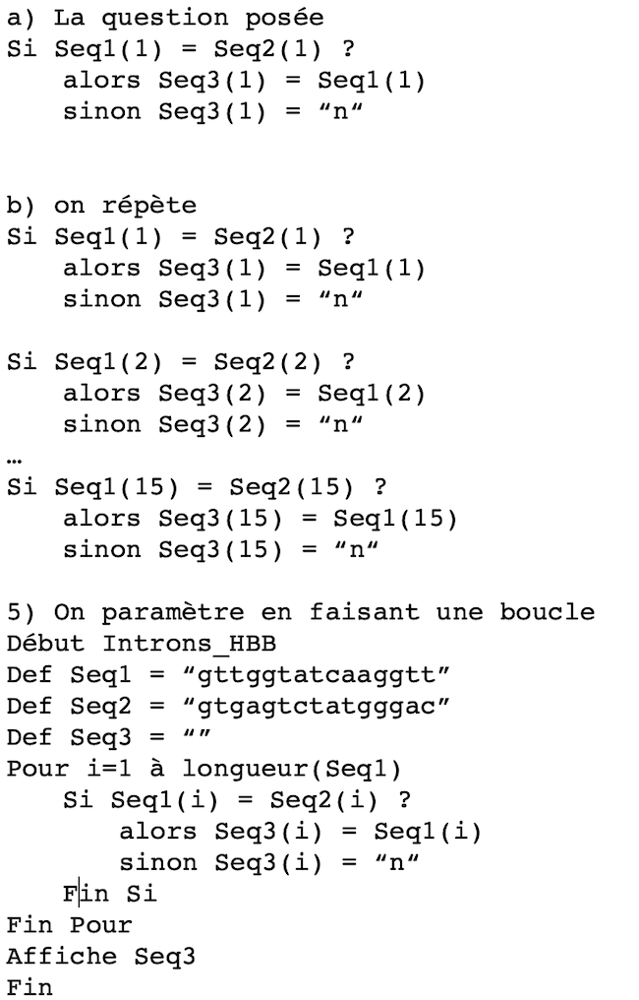
- Transcription sous R et vérification de la séquence consensus dans clustal
Voici un exemple de script R pouvant comparer 2 séquences :
# Programme R pour la comparaison de sequences deux a deux (ici les sequences de debut et de fin des introns)
# Les sequences a comparer sont stockees dans 2 vecteurs
# Les vecteurs sont lus et compares caractere par caractere
# En cas d'equalite, la valeur est stockee dans une variable, sinon, le caractere est N enregistre a la place
intron1 <- c("g","t","t","g","g","t","a","t","c","a","a","g","g","t","t","|","t","t","t","t","c","c","c","a","c","c","c","t","t","a","g")
intron2 <- c("g","t","g","a","g","t","c","t","a","t","g","g","g","a","c","|","a","t","c","t","t","c","c","t","c","c","c","a","c","a","g")
consensus <- length(intron1)
for (i in 1:31){
if (intron1[i] == intron2[i]) consensus[i] <- intron1[i]
else consensus[i] <- "N"
}
print("La sequence consensus entre les deux sequences est :")
cat(consensus)Le script fait apparaitre beaucoup de positions fixes. La comparaison portant sur seulement 2 introns et un gène, ce n’est pas statistiquement significatif.
Note
: Une fois l’algorithme défini, on peut le retranscrire dans n’importe quel langage de son choix: Voici 2 exemples de transcription en langage VBA (programmation de la suite Office) et en Python (Langage de programmation populaire en science)- MicroSoft Excel : Sauvegarder le fichier Excel_introns.xlsm sur votre disque, l’ouvrir en acceptant l’activation des macros dans Excel
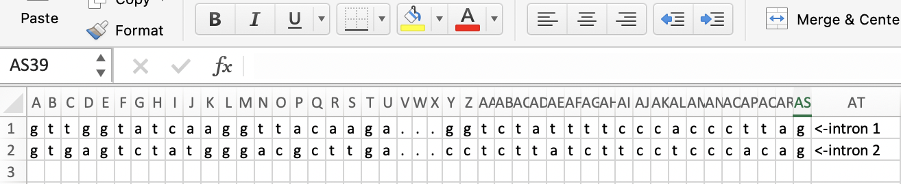
Aller dans le menu “Outils>Macros>Macros…”, puis cliquer sur “Executer”
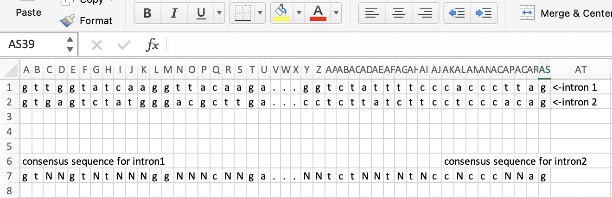
- Python : Voici un script python scripts/ un peu plus sophistiqué qui demande les séquences à comparer à l’utilisateur, mais propose des séquences par défaut. Il vérifie la longueur des séquences et accepte même si elles sont différentes et finalement présente le résultat différemment selon qu’il s’agisse de séquences protéiques ou nucléotiques (Mais il exige la présence d’un interpréteur python installé sur l’ordinateur)
# This Python script was designed to illustrate the lecture of the BIO504
# module at UGA - L3 Biology
# It asks the user for the 2 sequences to compare
# Then displays the consensus sequence between them
# T. GAUTIER ©2020
# import required package
import re
print('This script displays the consensus motif between\ntwo character chains of similar sizes\nsimply aligned one under the other\nTG@2020-22')
def main():
# Ask the user to enter the first sequence
seq1 = input("What is the first sequence? (just hit return for default value: ADFGHYOP) ")
# Ask the user to enter the second sequence
seq2 = input("What is the second sequence? (just hit return for default value: ADEGHILP) ")
# Prepare the memory space to store the consensus sequence
consensus = []
if seq1 =='':
seq1 = 'ADFGHYOP'
if seq2 =='':
seq2 = 'ADEGHILP'
# Test on the sequence length
if len(seq1) <= len(seq2):
length = len(seq1)
else:
length = len(seq2)
# Ask the user the type of sequence to analyse
letteru = input('Are your sequences proteic (just hit return for default value) or nucleotidic (type n)? ')
letter = 'x'
letteru = letteru.lower()
seq1 = seq1.upper()
seq2 = seq2.upper()
if letteru != '':
letter = 'n'
# Beginning of the loop
for i in range(length):
#Test the equality of the letter at a specific position
if seq1[i] == seq2[i]:
consensus.append(seq1[i])
else:
consensus.append(letter)
# Displaying the helping text
print("The consensus sequence between",seq1,"and", seq2,"is :")
# Formating the consensus sequence and displaying it
print(''.join(consensus))
# Asking the user for its choice
choice = input('\nWould you like to perform another comparison? (y/n) ')
print('\n')
if choice == 'y':
main()
else:
print('Ok, bye\n')
quit()
# Part of code necessary to make the script fully python compliant
if __name__ == '__main__':
main()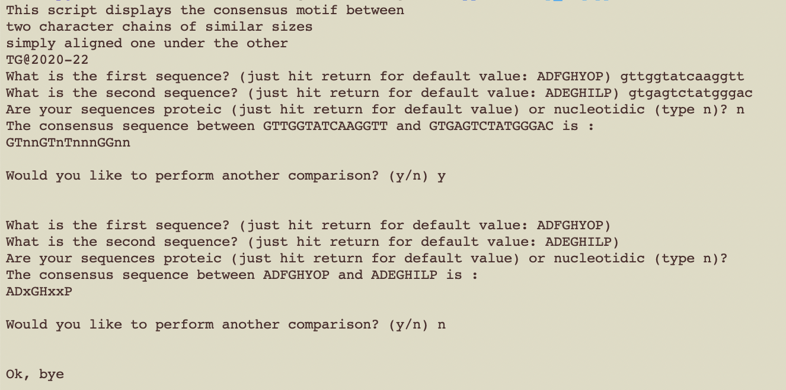
Si vous n’avez pas d’interpreteur python sur votre machine, vous pouvez tester le code sur ce site : Online Python.
- Copiez tout le script et collez-le à la place du code proposé dans la fenêtre principale de Online Python, puis cliquer sur le bouton Run)
- Répondez aux questions en fournissant les séquences avec un appui sur la touche Enter/Return pour valider (ou laissez les valeurs par défaut en validant avec Enter/Return seulement)
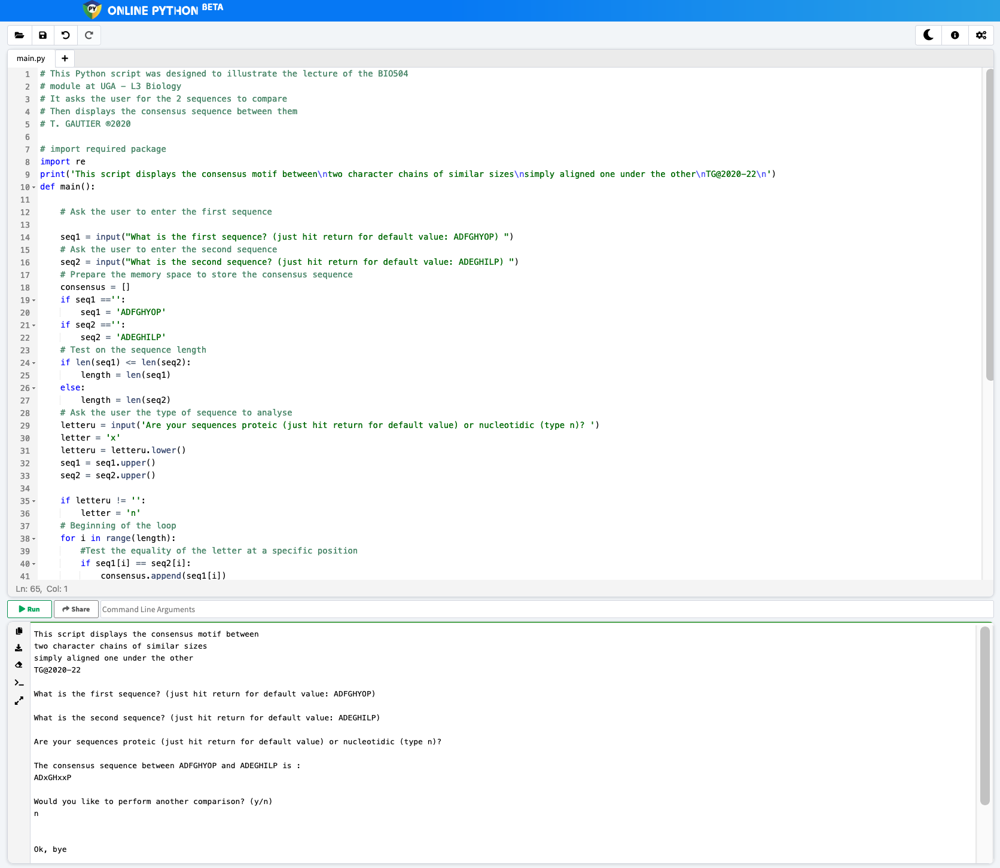
Cette approche ne permet de comparer que les séquences deux à deux. On regarde donc pour l’ensemble des 5 gènes de la famille beta en faisant la comparaison dans Clustal Omega
Exemple d’alignement pour le début des introns, seulement 3 positions invariables sur les 10 séquences.
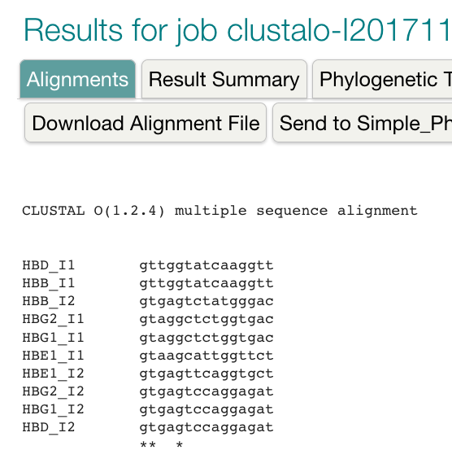
Mais si jamais il existe des positions de faible variation, on ne les voit pas dans Clustal omega
Pour les visualiser, on peut utiliser un outil pour faire un Sequence logo afin de mieux décrire le consensus
La visualisation des listes de début et de fin des introns dans Weblogo est représentée ci-dessous :
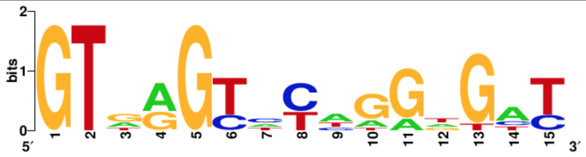
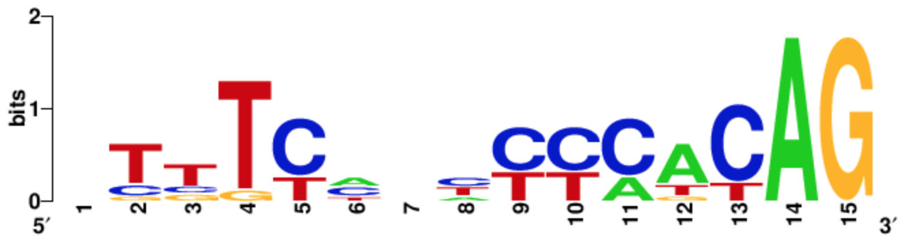
1.3 Réponses aux questions des parties 1.5
La recherche BLAST est faite avec une séquence protéique (HBB) dans une base de données protéique, le programme à utiliser est donc blastp
On obtient les informations en cliquant sur le lien + algorithm parameters en bas de page.
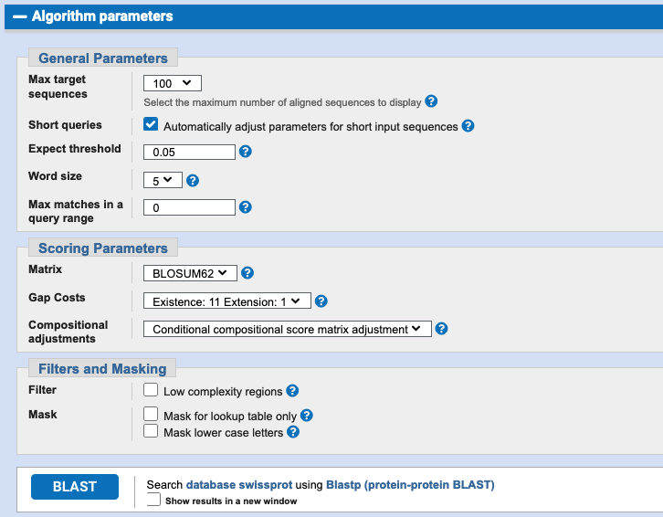
Puis il suffit de fournir la séquence HBB en copiant-collant la séquence FASTA ou en indiquant l’accession number de la protéine (NP_000509) directement dans la fenêtre
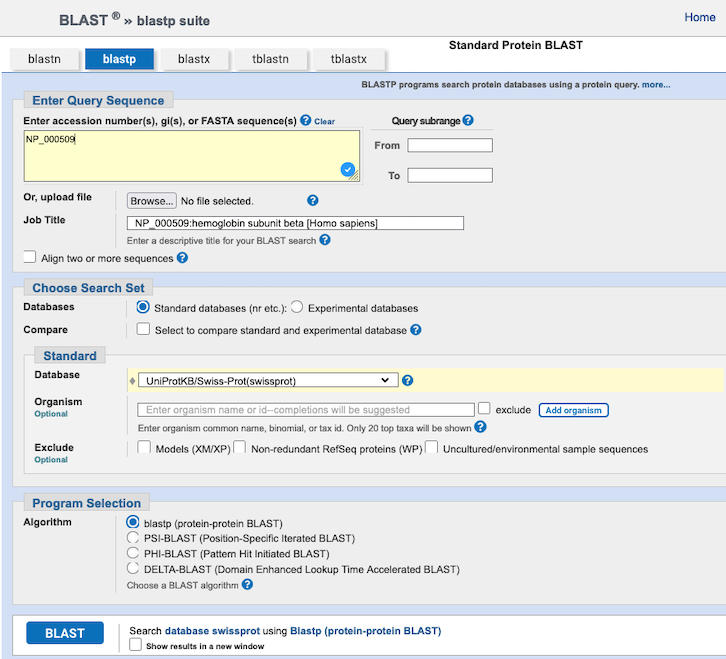
La recherche identique effectuée dans la base de données RefSeq nécessite d’utiliser le programme tblastn (séquence protéique et base de données nucléotidique)
- Les paramètres sont les mêmes puisque la recherche se fait aussi sur une base de données protéines après traduction des ARNm, le temps de recherche est plus long, car la taille de la base de données est beaucoup plus importante. Cela influe sur la valeur de la E-value, mais par sur le résultat du BLAST (voir CM5).